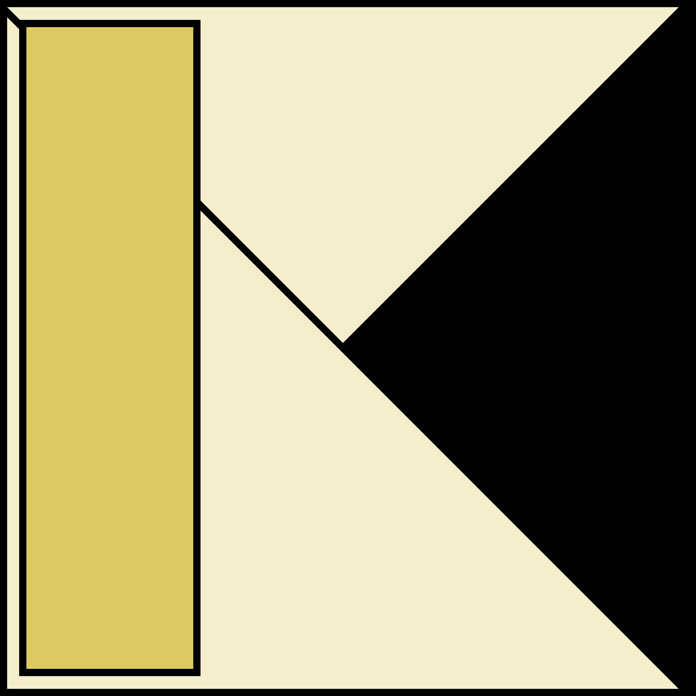

Mission
「楽しく、すごいものを。」を合言葉に、学習用では終わらない実運用可能なソフトウェアを継続的に開発します。

「楽しく、すごいものを。」を合言葉に、学習用では終わらない実運用可能なソフトウェアを継続的に開発します。
早く作る、早く試す、早く改善する。コードレビューと対話を通じて、個人の成長とチームの成果を両立します。
初心者歓迎・提案歓迎・失敗歓迎。まず作ってみる姿勢を尊重し、役割に縛られず協力します。
組み込み用途に設計した超小型のC言語製の軽量APIサーバー。
GitHubスマホなどをpcの入力装置に変えるソフト。現在開発休止中
GitHub(host) GitHub(client) GitHub(sig_server)Discordから情報の書き換えができるWebサイト作成をやってます。お気軽にご連絡ください。
Rust非公式日本版コミュニティの公式サイトを制作しています。
GitHub複数サービスを統一構成でデプロイできるテンプレート。Docker + CI/CD 設計を共有化。
準備中週次で実施している勉強会ログを整理して公開するナレッジベース。
準備中Owner / Backend / Architecture
Frontend / UI実装 / ドキュメント整備
Rust / CLIツール / 品質改善
Infrastructure / CI / 監視設計
毎週日曜 21:00〜。進捗共有・次週タスク・困りごと相談を実施。
Issueベースで作業分担。初心者向けの小タスクも常設しています。
学んだ内容を記事・資料・サンプルコードとしてまとめ、再利用可能にします。
Rust学習会やハンズオン企画で交流中。共同で初心者向け資料を整備しています。（ダミー）
UI実装レビュー会に相互参加し、設計パターンを持ち寄って改善サイクルを回しています。（ダミー）
監視・デプロイ・運用設計の知見交換を実施。小規模サービス向け運用テンプレートを共同検証中。（ダミー）